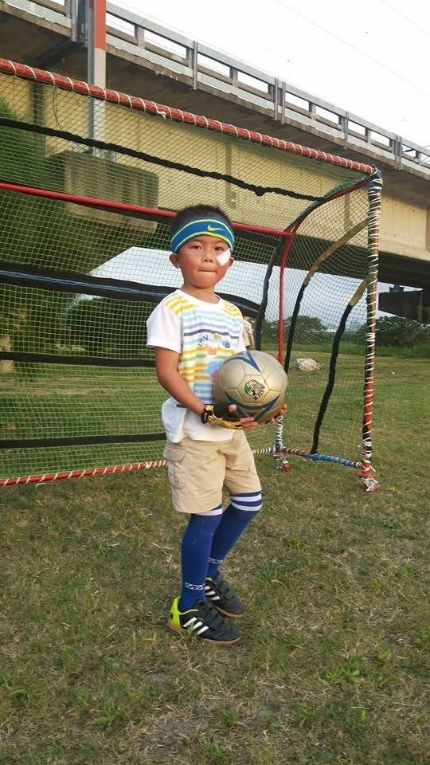
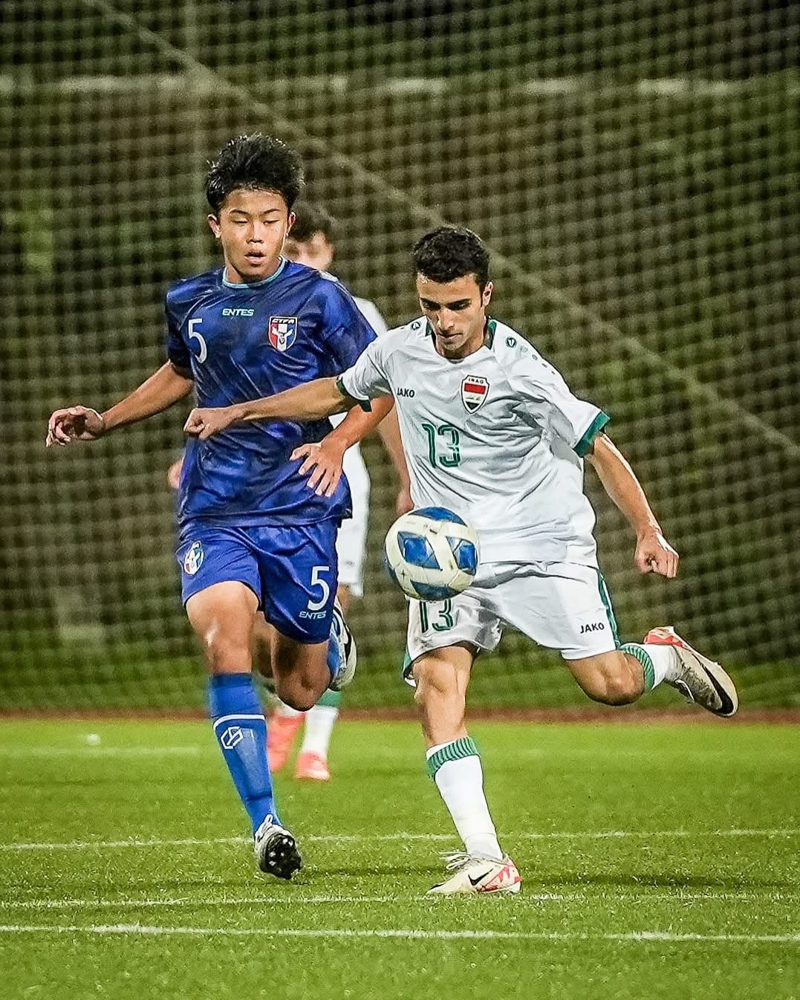

01我的故事
夢想在球場上淬鍊: 一步步走過試煉的旅程
我自國小一年級起便投入足球訓練，歷經國內外多層級的比賽與磨練。高一赴日本大阪興國高校就讀累積紮實的技術與戰術基礎。
為了拓展語言能力、國際賽經驗與 NCAA 大學升學機會，我於高二下轉往美國接受進階訓練，並參與 UPSL 聯賽。美國多元的足球文化與國際賽事接軌，讓我能在技術、體能、戰術理解與跨文化溝通力上持續精進，邁向 NCAA D1 校隊及國家 U20、U23 隊的目標。
這一路並不平坦，卻讓我明白夢想不是一蹴可幾，而是經歷一次次選擇與試煉後依舊不放棄。每一次轉折，都是為了站上更大的舞台，讓自己更接近理想，也讓世界看見台灣的足球力量。

